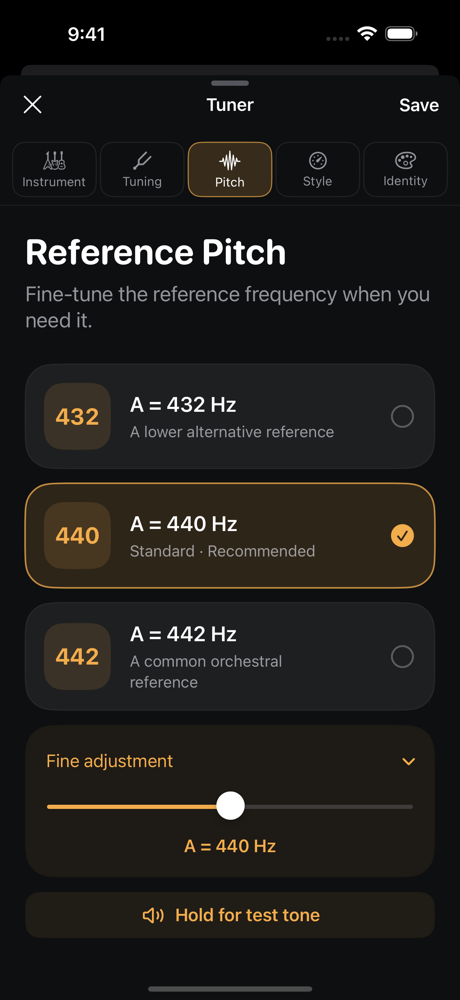

Reference pitch guide
432 vs 440 Hz: what changes when you tune?
432 and 440 Hz are two possible frequencies for the reference note A4. Choosing A4 = 432 lowers every target by about 31.77 cents compared with A4 = 440. It keeps the same note names and intervals in equal temperament.
Start with the music you are playing.
Use the reference agreed with the musicians you play with, or the one required by the recording or fixed-pitch instrument you are matching. A4 = 440 Hz is a common starting point. If your group uses 442 Hz, set 442. If your project calls for 432 Hz, set 432.
Changing a number in your tuner changes its target frequencies. Retune the instrument to those targets; adjusting the reference alone does not change the sound of a string that has already been tuned.
What does the number refer to?
It refers to A4, not every string marked A. At A4 = 440 Hz, A3 is 220 Hz and A2 is 110 Hz. At A4 = 432 Hz, they become 216 Hz and 108 Hz. Each octave down halves the frequency.
| Note | A4 = 440 | A4 = 432 |
|---|---|---|
| A4 | 440.00 | 432.00 |
| A3 | 220.00 | 216.00 |
| A2 | 110.00 | 108.00 |
| Low guitar E2 | 82.41 | 80.91 |
Is 432 Hz the same as tuning down a half step?
No. Moving from A4 = 440 to 432 is about 31.77 cents down. A half step is 100 cents. For E♭ Standard guitar tuning, use the intended target notes; simply switching the A reference to 432 does not produce that tuning.
The distinction also applies to alternate tunings. Drop D changes the sixth string’s target note. DADGAD changes three targets from standard. A different A reference shifts every target frequency together.
How to set your reference in MultiTuner
- Create or edit a tuner and open its reference-pitch controls.
- Choose the quick 432, 440 or 442 Hz option, or adjust within 400–480 Hz.
- Hold the reference test tone if you want to hear the selected A reference.
- Save the tuner, then tune your instrument one note at a time.
The reference is saved with that tuner. You can keep one setup at 440 and another at 432 without rebuilding the tuning each time. Free includes two saved tuners, adjustable reference pitch and the reference test tone.

Why does my tuner say I am flat?
If your instrument is tuned to 432 while the tuner expects 440, its matching notes will read about 32 cents flat. Check the saved A reference before adjusting every string. If you are playing with others, agree on a shared reference first.
Notes and sources
Written for MultiTuner. Frequency tables are calculated using f = A4 × 2((m − 69) / 12), where m is the MIDI note number. See UNSW’s note and frequency reference. App instructions are checked against MultiTuner’s built-in presets and reference-pitch controls.